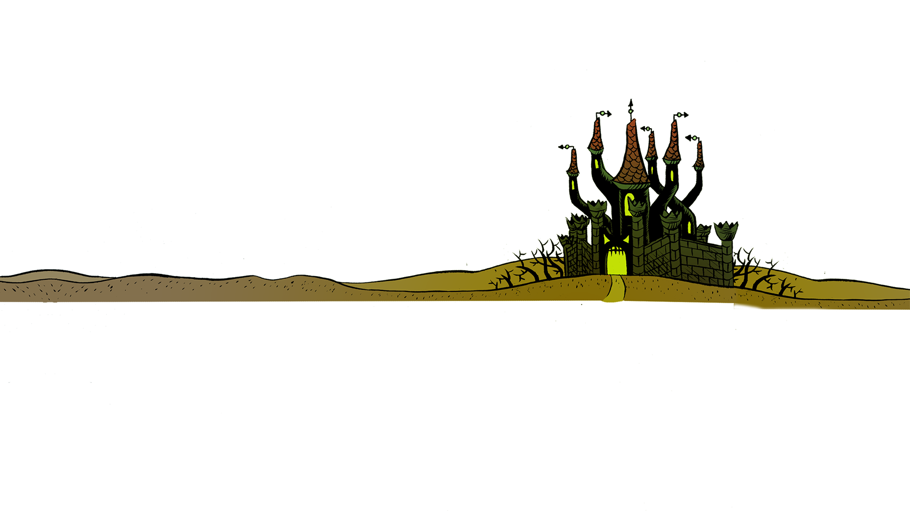
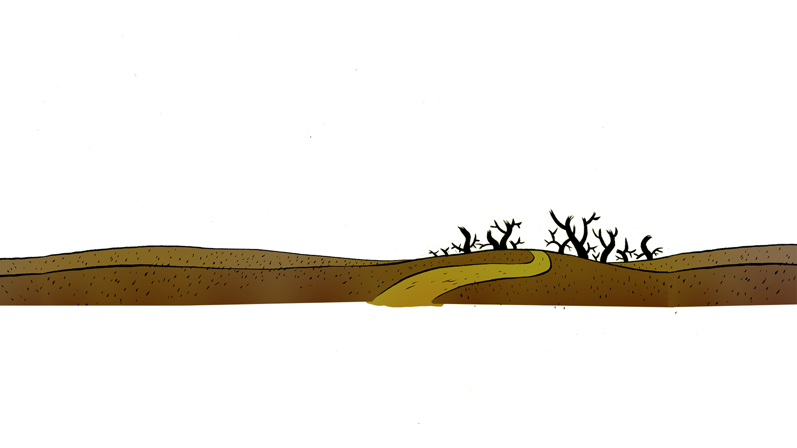
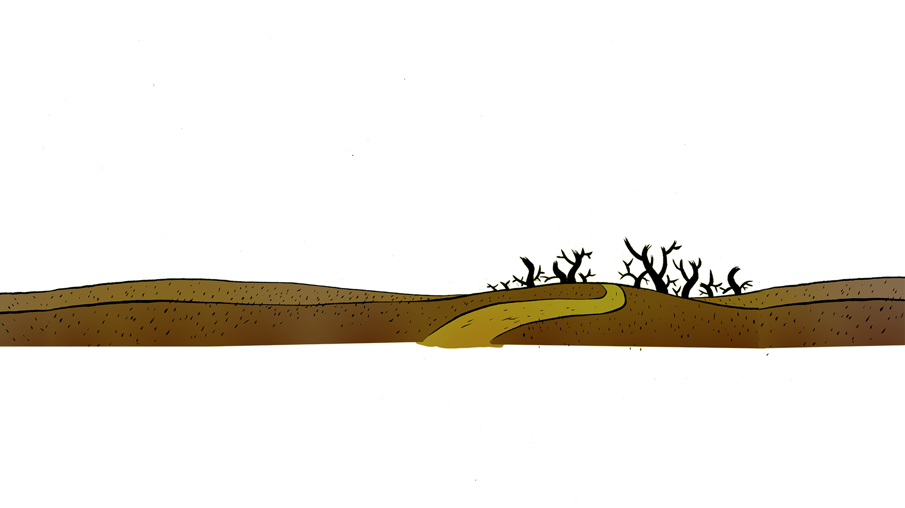
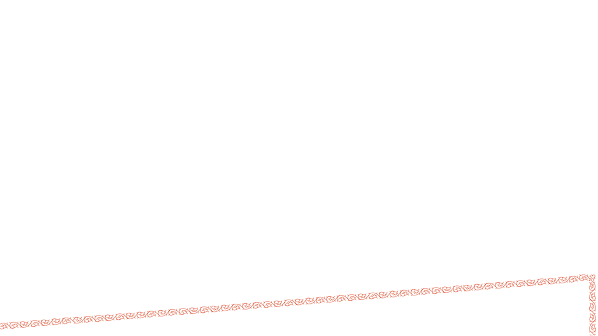
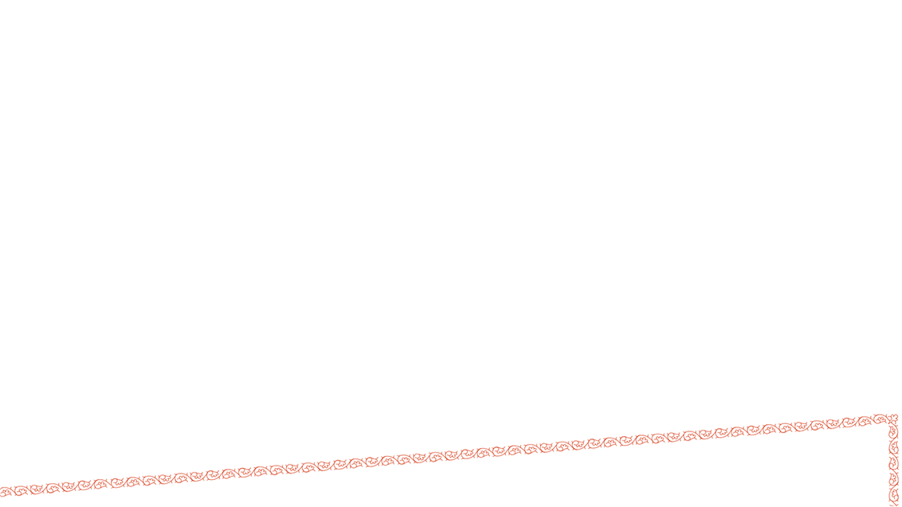
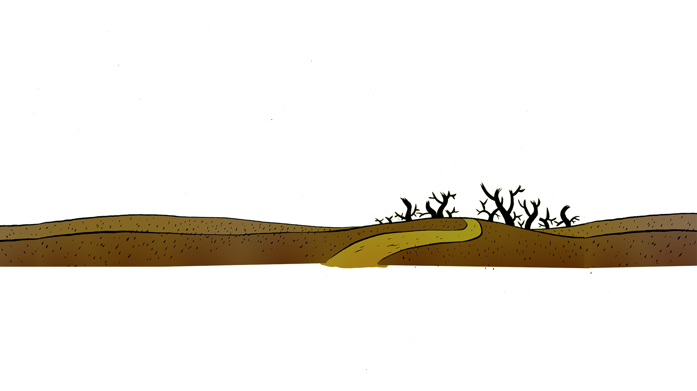
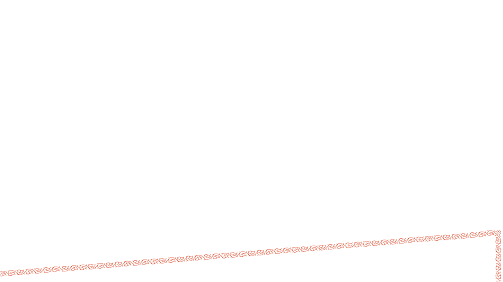
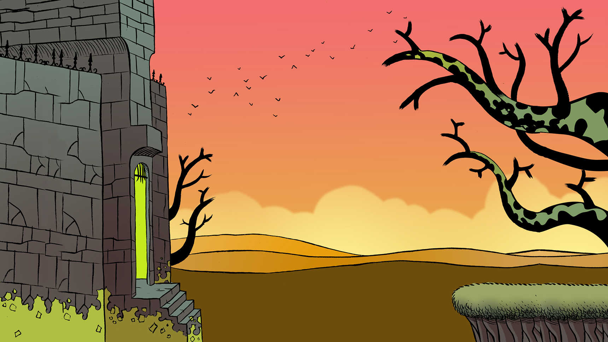
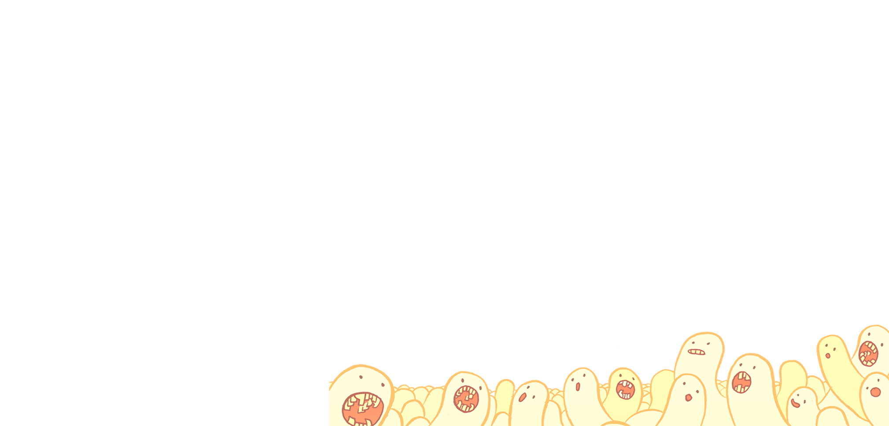

 


 



u misión es conseguir el Engagement, un misterioso amuleto que cambia de forma y se encuentra escondido en el fondo de un baúl dentro de un castillo inexpugnable. Para hacerte con él tendrás que tomar diferentes decisiones: unas te permitirán avanzar y desbloquear textos, otras te harán perder tus opciones de conseguir tu objetivo.

